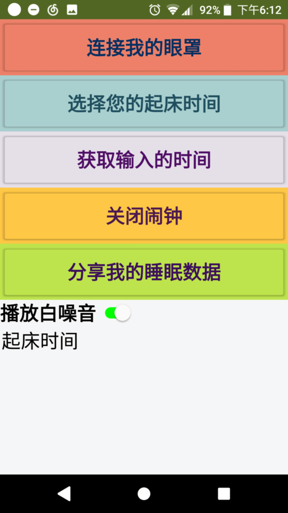
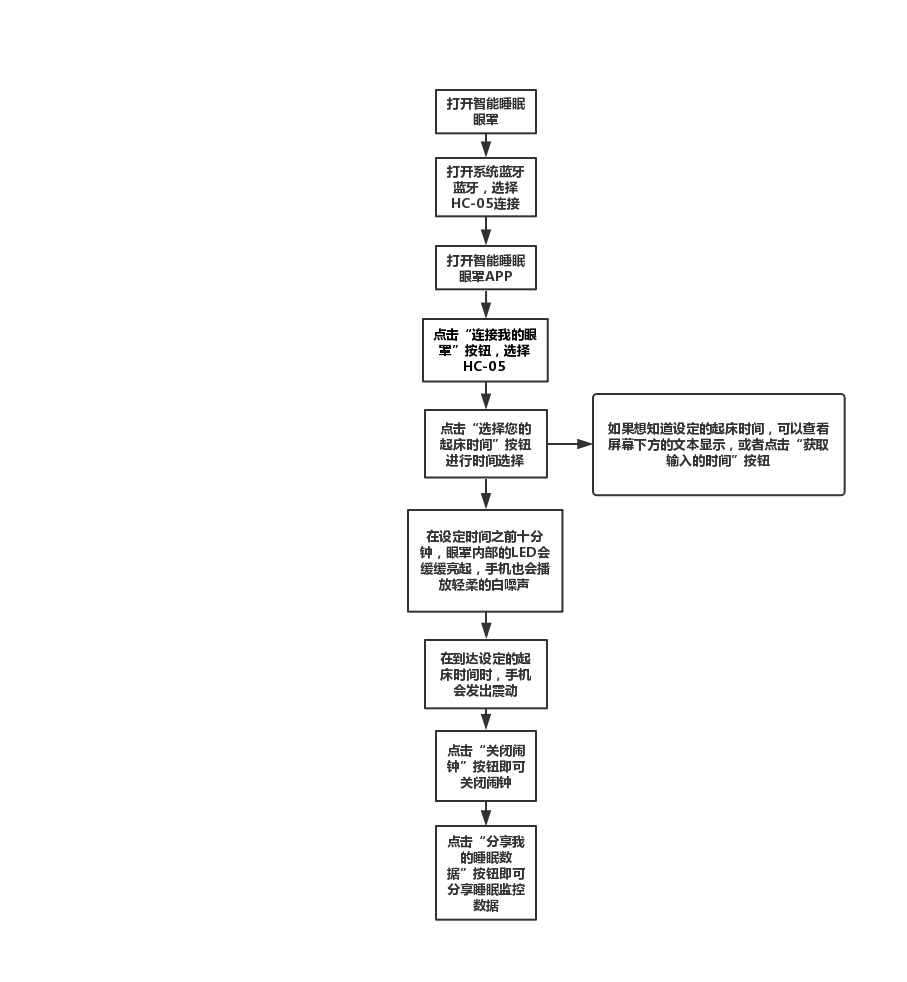

APP界面如下：

App界面使用了简洁的设计，配色上使用了温暖柔和的颜色，有助眠的效果；操作界面简洁，使得本软件可以适合任何群体，就连刚刚使用智能手机的老年人都可以轻松操作。
要使用本产品，首先需要安装配套的“智能睡眠眼罩”App。使用方式如下：
1. 在系统设置界面打开手机的蓝牙，选择“HC-05”并连接；连接的初始密码是1234。
2. 打开“智能睡眠眼罩”App，并给予权限。
3. 点击“连接我的眼罩”按钮，选择“HC-05”并连接。如果连接成功组会显示“连接成功”。如果连接不成功，可以遵循软件给出的提示重新连接。
4. 成功连接之后便可以点击“选择您的起床时间”按钮设置起床时间。设置好之后，你选择的时间数据将会通过蓝牙模块发送给智能眼罩，屏幕下方的显示标签也会被调整为您设置的起床时间。注意：眼罩会在到达预设时间前十分钟缓缓点亮LED灯，并且播放白噪音，白噪音功能可以通过App界面的白噪音开关自由选择是否播放。当到达预定时间时，手机会每隔0.5s震动一次，眼罩的LED亮度也会被挑至最大。
5. 当您已经被唤醒、或是想取消之前保存的闹钟的时候，可以点击“关闭闹钟”按钮，便可以关闭闹钟并且删除之前定好的闹钟。
6. 当一次“设定—唤醒”完成之后，便可以分享这一段时间的睡眠数据。点击“分享我的睡眠数据”按钮，便会弹出分享选择框，选择之后便可以通过互联网将自动生成的睡眠数据分享给想要分享的目标了。

链接：https://pan.baidu.com/s/1PnNqF0ruPL0jvK0CSPIvSg 提取码：qrka